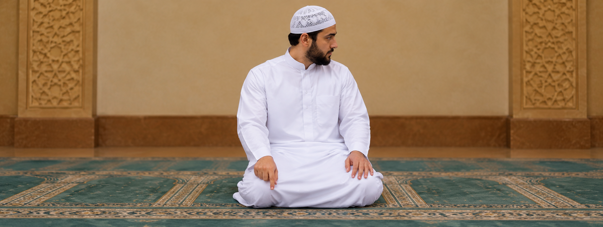

التشهد والتسليم
Tashahhud & Taslim
التشهد والتسليم
Tashahhud & Taslim
Tashahhud & Taslim
التشهد — Tashahhud
التحيات لله والصلوات والطيبات، السلام عليك أيها النبي ورحمة الله وبركاته، السلام علينا وعلى عباد الله الصالحين، أشهد أن لا إله إلا الله، وأشهد أن محمدًا عبده ورسوله.
الصلاة الإبراهيمية — Salat Ibrahimiyyah
اللهم صل على محمد وعلى آل محمد كما صليت على إبراهيم وعلى آل إبراهيم إنك حميد مجيد، وبارك على محمد وعلى آل محمد كما باركت على إبراهيم وعلى آل إبراهيم إنك حميد مجيد.
التسليم — Taslim
سلّم عن اليمين ثم اليسار قائلاً: السلام عليكم ورحمة الله.
